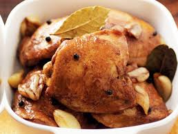

Chicken Adobo
Ingredients
- 1 kg chicken parts, cut into serving portions
FOR THE MARINADE
- 2 Tbsp crushed garlic
- 3 Tbsp DEL MONTE Red Cane Vinegar
- 2 Tbsp soy sauce
- 1/4 tsp peppercorn, crushed
- reserved pineapple syrup
- 1/4 cup oil, for frying
- 1 pouch DEL MONTE Pineapple Tidbits (200g), drained, reserve syrup
- 1/4 cup crushed and fried garlic
Preparation
- 1. Marinate chicken for 30 minutes. Drain and reserve marinade.
- 2. Fry chicken in oil until golden brown.
- 3. Combine chicken with marinade then simmer until chicken is tender. Add DEL MONTE Pineapple Tidbits. Top with fried garlic.